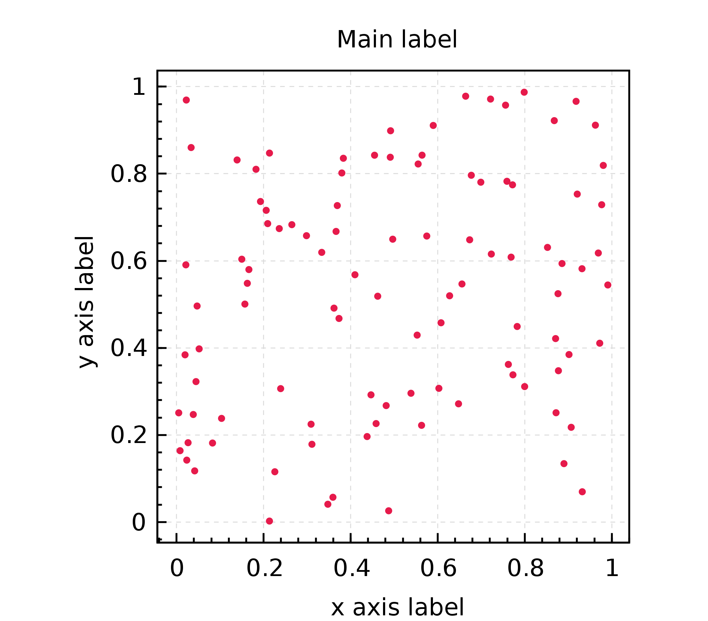

Scala plotting library #
nspl is a fast and expressive plotting library for the Scala programming language. nspl can create various plots (scatter, line, bar, box etc) and complex figures.
Platforms and output formats #
The library supports Scala on the JVM and Scala.js in the browser.
It can render both vector graphics (SVG, PDF, postscript) and raster formats (JPG, PNG).
It also supports interactive graphics contexts like java.awt.Graphics2D or the html5 canvas.
Peformance #
nspl has reasonable performance. For example the canvas backend can render and animate a plot containing a few thousand data points with 60fps.
Getting started (on JVM) #
Add the following lines to your build.sbt depending on the runtime environment
libraryDependencies += "io.github.pityka" %% "nspl-awt" % "0.8.0"
To use nspl on the JVM with the java.awt renderer you need the following imports:
import org.nspl._
import org.nspl.awtrenderer._
To use nspl in the browser with the html5 canvas renderer you need these imports:
import org.nspl._
import org.nspl.canvasrenderer._
For example, to draw a simple scatter plot:
import org.nspl._
import org.nspl.awtrenderer._
import scala.util.Random.nextDouble
val someData =
0 until 100 map (_ => nextDouble() -> nextDouble())
val plot = xyplot(someData)(
par(
main="Main label",
xlab="x axis label",
ylab="y axis label"
)
)
renderToByteArray(plot.build, width=2000)
The above code block produces this plot: 
Getting started (using Scala.js) #
Add the following lines to your build.sbt
libraryDependencies += "io.github.pityka" %%% "nspl-canvas-js" % "0.8.0"
To use nspl in the browser with the html5 canvas renderer you need these imports:
import org.nspl._
import org.nspl.canvasrenderer._
For example, to draw a simple scatter plot:
import org.nspl._
import org.nspl.canvasrenderer._
import scala.util.Random.nextDouble
val someData =
0 until 100 map (_ => nextDouble() -> nextDouble())
val plot = xyplot(someData)(
par(
main="Main label",
xlab="x axis label",
ylab="y axis label"
)
)
val (canvas, _) = render(plot, width = 600, height = 600)
node.appendChild(canvas)
Dependencies #
nspl has minimal external dependencies.
nspl-awtdepends on vectorgraphics2dnspl-canvas-jsdepends on the Scala.js runtime library andscalajs-dom